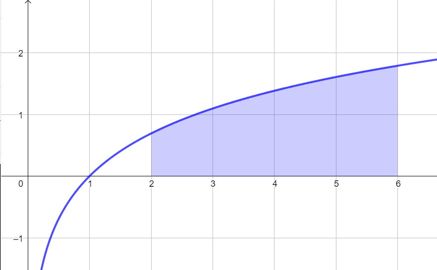
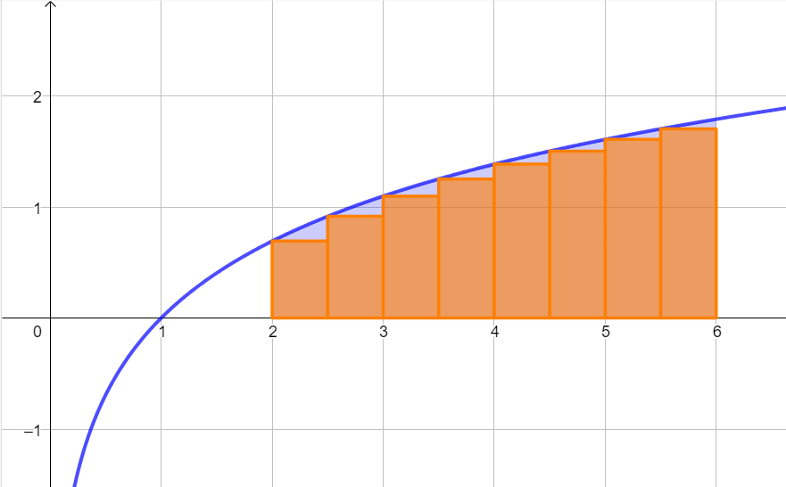

⚠️⚠️⚠️ Per svolgere questi esercizi è consigliato l'utilizzo della calcolatrice
(a meno che non abbiate molto tempo ed una buona dose di pazienza)
Esercizio guida
Consideriamo la funzione \(f(x) = x + 1\) e l'intervallo \([1\,,\,\,4]\).
Determinare l'area sottesa al grafico della funzione in corrispondenza di \([1\,,\,\,4]\).
Svolgimento
Esercizio 1
Consideriamo la figura sottesa al grafico della funzione
\[
f: \quad y = ln(x)
\]
in corrispondenza dell'intervallo \([2\,;\,\,5]\)

Approssimare l'area della figura calcolando la somma delle aree degli \(8\) rettangoli rappresentati nel seguente grafico.

Esercizio 2
Scrivere un algoritmo che calcoli l'approssimazione dell'area della figura considerata nell'esercizio precedente nel caso in cui
l'intervallo venga ripartito in \(50\) sottointervalli aventi la medesima ampiezza.
Esercizio 3
Individuare tutte le funzioni \(f\) aventi come derivata \(2x\), ovvero tali che
\[
f'(x) = 2x
\]
Osservazione/spoiler
Questo esercizio apparentemente non c'azzecca nulla con i due precedenti.
Appartentemente...